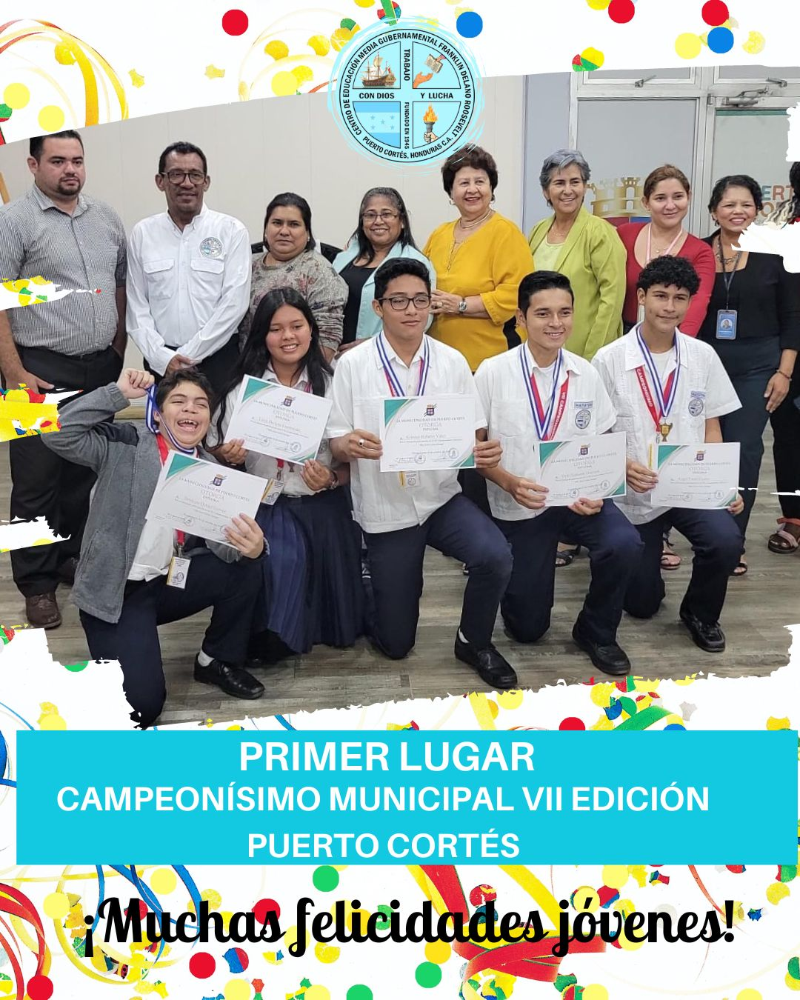
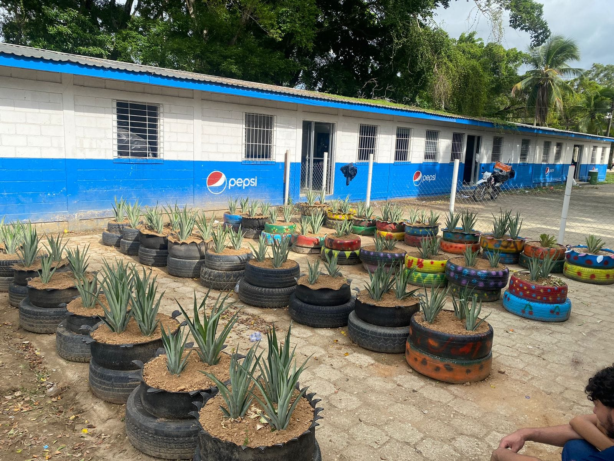
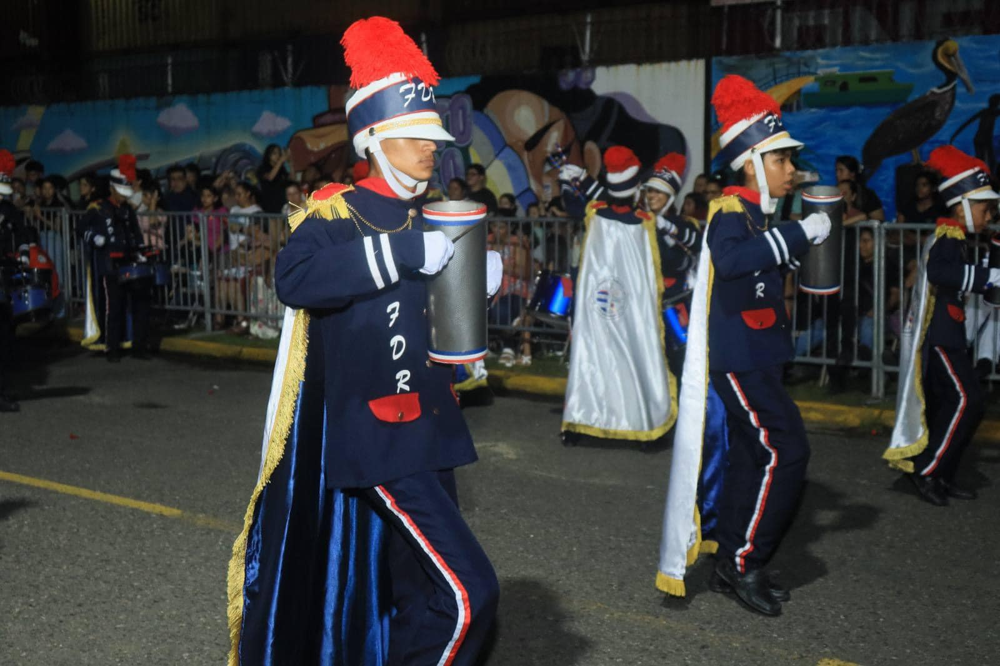

C.E.M.G Franklin Delano Roosevelt
Educar para Refundar

En el C.E.M.G Franklin Delano Roosevelt, estamos comprometidos con la formación integral de nuestros estudiantes...
El Instituto Franklin Delano Roosevelt en Puerto Cortés, Honduras, es una importante institución educativa fundada en 1945. Actualmente, alberga a unos 3,500 estudiantes y ofrece tanto educación secundaria general como una variedad de carreras técnicas y comerciales, como secretariado, administración, computación, y hostelería y turismo. Se encuentra ubicado en el barrio Cienaguita, cerca de la carretera que conecta Puerto Cortés con Omoa.
El instituto ha experimentado un crecimiento significativo, incluyendo la inauguración de un nuevo edificio que mejora las condiciones para estudiantes y profesores. Este avance ha permitido aumentar la capacidad del instituto, que sigue ampliándose con la meta de ofrecer educación universitaria en el futuro.
Además, el Franklin Delano Roosevelt ha sido considerado para convertirse en un instituto polivalente, con el objetivo de formar a jóvenes en carreras técnicas como refrigeración, mecánica y electricidad, para reducir el desempleo y mejorar las oportunidades laborales en la región.
¡Ganamos el Primer Lugar!
Huerto del Instituto
Banda FDR
¡BANDA FDR Gana Segundo Lugar en COMPETENCIA NACIONAL realizada en Sonaguera Colón, en el circuito FECCAH!